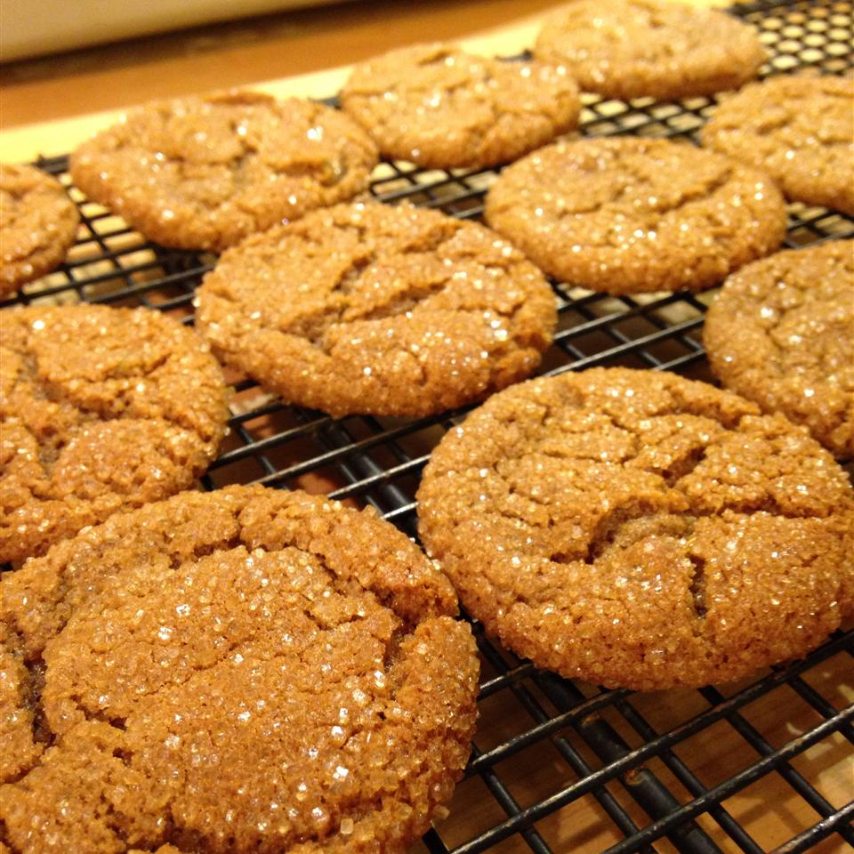

A pain to make, but worth it!
Ingredients
- Butter - 3/4 cup
- Sugar, brown (packed) - 1 cup
- Egg - 1
- Molasses - 1/4 cup
- Flour, AP - 2 1/4 cups
- Ginger, ground - 2 tsp
- Baking soda - 2 tsp
- Salt - 1/2 tsp
- Ginger, fresh root (minced) - 1 1/2 Tbsp
- Ginger, crystallized (chopped) - 1/2 cup
Recipe instructions
- In a large bowl, cream together the butter and brown sugar until smooth. Beat in the egg and molasses. Combine the flour, ground ginger, baking soda, and salt; stir into the molasses mixture using a wooden spoon. Mix in the fresh and crystallized gingers. Cover, and refrigerate dough for at least 2 hours, or overnight.
- Preheat oven to 350 degrees F (175 degrees C). Shape dough into 1 inch balls, and place about 2 inches apart onto ungreased cookie sheet.
- Bake for 10 minutes in the preheated oven, or until lightly browned. Cool on wire racks.
Source (Allrecipes)
Return to top
Return to main page